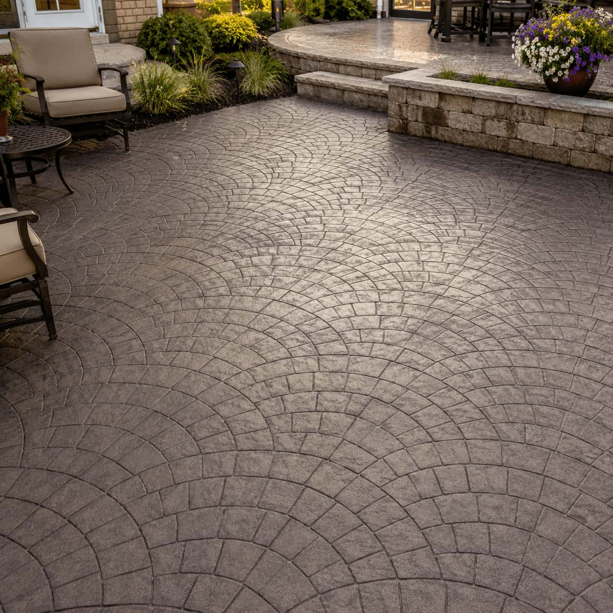

Choose project type
Select driveways, patios, slabs, foundations, or stamped concrete.
BETON helps homeowners explore local concrete provider options, review project-fit paths, and request quote options without positioning itself as a direct concrete contractor.
Concrete services
From residential driveways to large structural slabs — compare local providers for any concrete project.
View all services →How it works
BETON keeps the process simple: share your project direction, review available provider categories, and request quote paths based on your location and concrete surface needs.
Select driveways, patios, slabs, foundations, or stamped concrete.
Compare project-fit categories, availability signals, and service focus.
Use your project details to start a quote request path with local providers.
Provider comparison
Review service focus, project categories, and available request options.
Availability can vary by location, project size, timing, and provider coverage.
Compare options based on surface type, finish goals, site access, and timing.
Start a request path with project details before moving forward with providers.
Common questions
Quick answers about how BETON works as an independent concrete service comparison platform.
No. BETON is an independent comparison platform. It helps users explore provider options, but it does not pour, install, repair, or replace concrete directly.
You can compare options for concrete driveways, patios, slabs, foundations, stamped concrete, decorative surfaces, and related residential concrete projects.
Exact measurements are helpful, but not required to start. Approximate size, ZIP code, project type, access notes, and timing can help shape the request path.
Concrete work is performed by independent providers. Users should verify provider license, insurance, pricing, availability, and project terms before hiring.

Surface selector
Different concrete surfaces can require different preparation, finish experience, access planning, and timing. Use the rows as a visual way to think through your request.
Start with comparison
Use BETON to explore local concrete service options for driveways, patios, slabs, foundations, and decorative stamped surfaces.